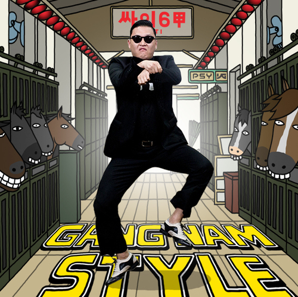

5 POP CULTURE ICONS
1. People either love or hate One Direction these days. I don't care for any of their songs myself. Mostly girls are fans.
2. A lot of people really like Skrillex which is a Debstep band (wub wubwub wubbity wub WwUuBBB SCREECH! wuuuurrrrbble wub wurrrbeee wumbo...). I like the ones that actually have lyrics, the rest is really repetitive and stupid.
3. Maroon 5 is pretty good. I like some of their songs (Moves Like Jagger and Payphone). Adam Levine, the singer, has a seat on The Voice! The Voice is a good singing show.
4. Gangnam Style! Op, Op Op Op, Oppa Gangnam Style! came out a couple months ago, and is blowing up on Youtube. I'm sure Youtube is just as popular as ever, right? Not gonna lie, it's pretty catchy.
5. Of course people still like Ke$ha for some reason. Her songs are ok but get really old really fast. I used to like some of them but now when they come up on my iPod, I press skip.